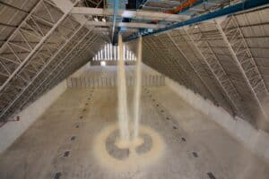
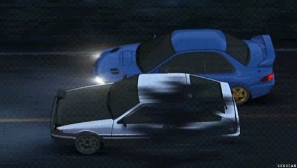
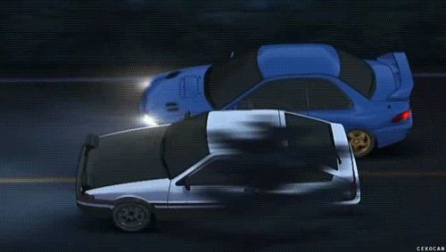

NOTÍCIAS

negócios
data: 13 maio de 2025
VLI atinge recorde histórico de movimentação de açúcar na Ferrovia Centro-Atlântica
Um Pouco Mais
 

Galeria de Imagens
Contato
Para mais informações, envie um e-mail para: contato@ferroviasdobrasil.com